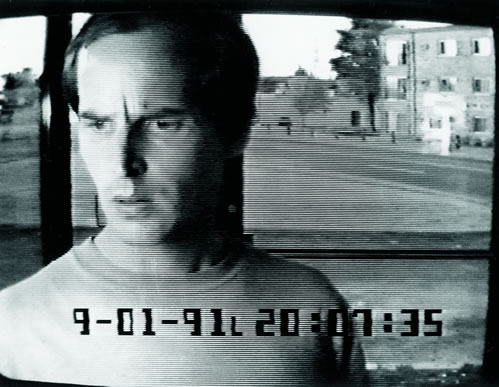
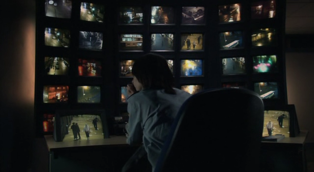
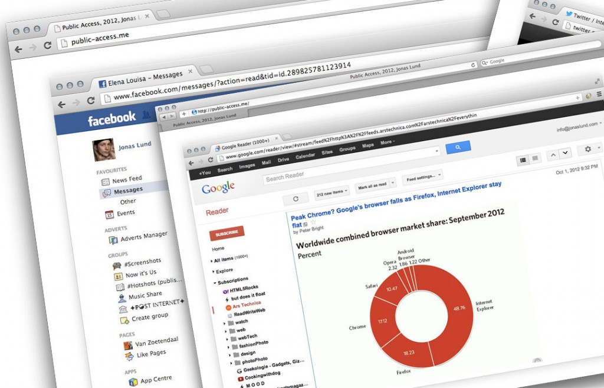
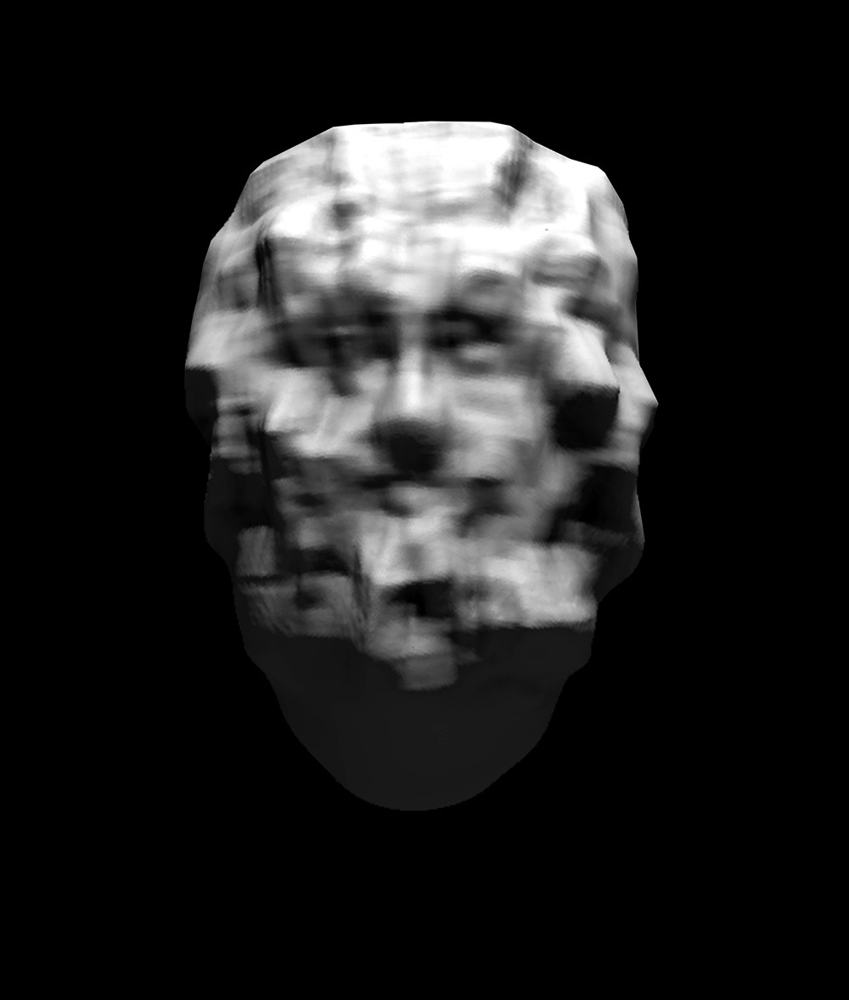
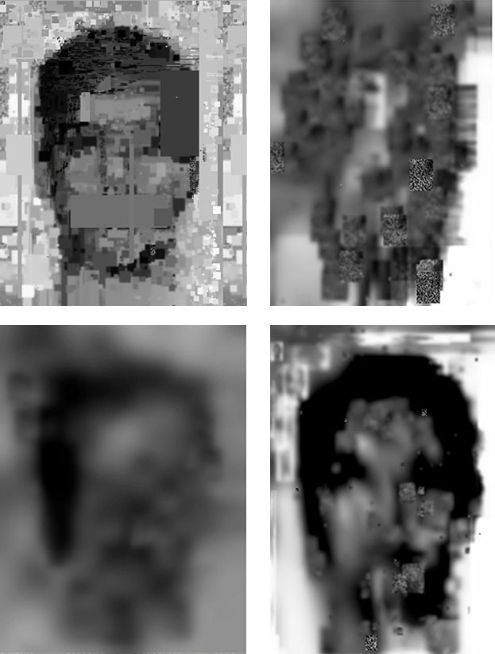
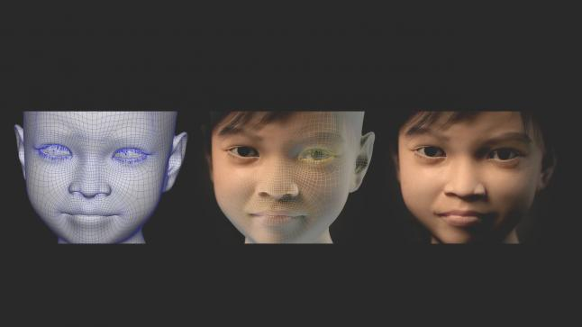
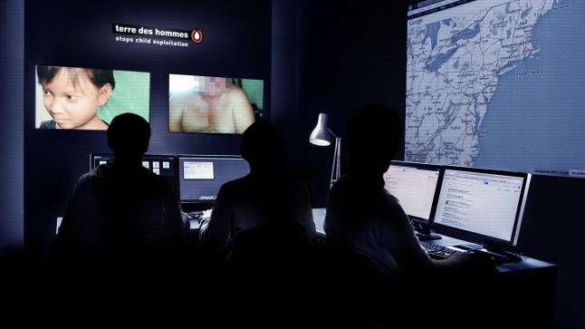
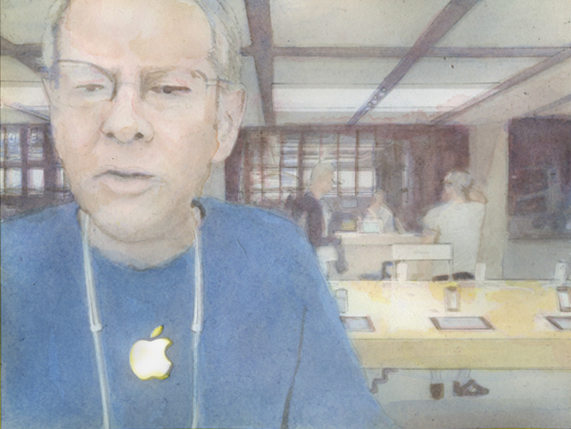
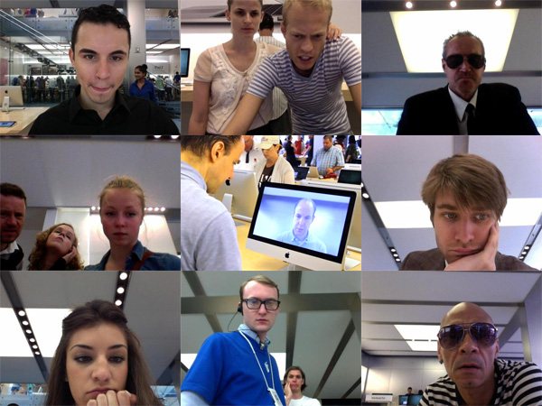

3- VISUELE VERTALING
Introductie
Om een visuele vertaling te maken ter ondersteuning van het onderwerp privacy, worden er in dit hoofdstuk een aantal werken van kunstenaars en ontwerpers uitgelicht. De keuze voor kunstenaars en ontwerpers is vanwege het feit dat deze vaak een tegenbeeld geven. Het onderwerp bevragen door het binnenste buiten te keren of het op de hak te nemen. In veel van deze werken staat het verzamelen van data centraal. De ontwerpers en kunstenaars uiten veel kritiek op de huidige privacy regelgevingen. Naast werk door ontwerpers en kunstenaars komt er ook een reclame campagne en een film aan bod, die beiden op hun eigen manier een mooie visuele vertaling maken van het onderwerp privacy. Door de werken wordt er geprobeerd de toeschouwer meer bewust te maken van zijn of haar privacy.
3.1 CASH MACHINE (1991)
Sophie Calle (Parijs 1953) is een Franse conceptuele kunstenares. Ze is actief sinds de jaren zeventig. Haar werk gaat vaak over menselijke kwetsbaarheid, identiteit en intimiteit. Calle begon het samenstellen van de serie "Cash Machine" in 1991, uit de foto's die zijn opgeslagen in het politiebureau in Minneapolis, in de VS. Deze foto's werden iedere 20 seconden genomen door een bewakingscamera van een pin automaat. Calle selecteerde een reeks beelden, deze onthulde een scala van emoties en gedrag. Variërend tussen hoop angst, teleurstelling, verlies, geweld en vreugde. Het contrast tussen de context van de foto, die bedoeld was voor een klinisch politie-onderzoek, en de emoties benadrukken de ruimte waarop de kunstenaar probeert te concentreren.
Het werk laat zien hoe zelfs de simpelste ontmoeting tussen mens en machine emotionele reacties oproept. De machine die we allemaal gebruiken om geld te pinnen wordt hier geopenbaard als een van de ontelbare surveillance apparaten waar we elke dag mee geconfronteerd worden. Het werk fungeert als een spiegel die de toeschouwer wordt voor gehouden. De toeschouwer wordt geconfronteerd met emotionele blootstelling tijdens een dagelijkse handeling, waarbij er niet bemerkt wordt dat dit wordt opgeslagen. Je wordt geconfronteerd met het feit dat je als gebruiker van een geld automaat in bepaalde mate informatie over jouw privé toestand afgeeft.

Afbeelding: 1: Still uit het werk Cash Machine (1991)
3.2 RED ROAD (2006)
Red Road is een Brits/Deense thriller/dramafilm uit 2006, geregisseerd door Andrea Arnold. Red Road is de eerste van drie films van de The Advance Party, een groep die op de uitdaging van Lars von Trier inging om drie films met dezelfde groep personages te maken.
Red Road speelt zich af in een wereld waar de dagelijkse activiteiten van de burgers zijn onderworpen aan constante bewaking. De film speelt zich af in de stad Glasgow. De waarschuwing: Big Brother is watching, is geëvolueerd van een grimmige fantasie tot een banale werkelijkheid. De film schetst een toekomstbeeld van een democratische samenleving die door de invloed van surveillance, zich steeds meer vormt naar dat van een autoritaire samenleving. Het plot van de film is dat hoofdrolspeelster Jackie, medewerkster van een controlekamer. Op dagelijkse basis alle beelden van diverse bewakingscamera's controleert vanuit haar werkplek. Jackie verplaatst zich zowel in de rol van 'bioscoop bezoeker' als van film maker. Haar baan stelt haar namelijk in staat te observeren, regisseren en uitvoeren tegelijk. Haar vermogen om de beelden die ze observeert, als een filmmaker te bewerken en te verfijnen. Zorgt ervoor dat zij het gebruik van privacy gevoelige informatie gaat gebruiken om haar eigen leven mee te regisseren. Zo ook als zij de recent vrijgelaten verkrachter van haar zus gaat volgen via de vele camera's die zij tot haar beschikking heeft. Wat volgt is een misselijk, nieuwsgierig spel van intieme spionage.
De film schets dus een scenario waarin een individu te maken krijgt met de verantwoordelijkheid over de privacy van miljoenen mensen in de stad Glasgow. Wat in het geval van Jackie dus eindigt in een ondermijning van deze verantwoording door het misbruiken van het controlesysteem. Dit geeft dus eens te meer aan wat voor nare bijwerkingen het bewaken van mensen door het gebruik van camera's kan betekenen. En activeert het bewust zijn over het gevaar wat onze privacy loopt, bij het gebruik van deze technologie.

Afbeelding 2: Still uit de speelfilm Red Road (2006)
3.3 PUBLIC ACCESS ME (2012)
In Public Access Me toont de in Nederland woonachtige, Zweedse internet kunstenaar, Jonas Lund (1984). Een radicale oplossing tegen privacy schending: de volledige opgave van zijn online privacy. Lund toont een prettig anti-totalitaire open houding ten aanzien van zijn gehele internetgedrag. We kunnen in real-time over zijn schouder meekijken terwijl hij mails schrijft, zijn Facebook checkt en Tweets verstuurt op Twitter.
De ervaring van Public Access Me lijkt misschien nog het meeste op reality-tv tv-programma's als Big Brother, waar het alledaagse opeens alle aandacht krijgt. Er wordt ingespeeld op de verheerlijking van het feit dat je inzage krijgt in iets wat geacht wordt als privé. Iets wat normaal vanwege het beschermen van de privacy, afgeschermd is voor de buitenwereld. Het werk vergt een intense toewijding van Lund, die zich continu bewust is van zijn radicale transparantie. Aan de andere kant maakt het werk zichtbaar daar de betekenis van privacy door het internet aan het veranderen is. Dit vanwege het feit dat een steeds groter deel van ons dagelijks leven zich online afspeelt. Daarbij moet worden gedacht aan het onderhouden van sociale contacten, het maken van afspraken bij o.a. dokter, restaurant of autogarage, het aanschaffen van producten of het doen van zakelijke aangelegenheden. Hierbij wil het gemiddelde individu geen pottenkijkers, omdat dit toch in vele gevallen gaat om zaken waar de diepere emoties van een individu aan bod komen. Het beschermen van de eigen en innerlijke leefomgeving wordt dus op de proef gesteld door Lund.

Afbeelding: 3: Jonas Lund – Public Access Me (2012).
3.4 DATA-MASK (2013)
Data-mask (2013)
Door de komst van nieuwe technologieën is het tegenwoordig mogelijk om in real-time personen te identificeren via camera beelden. Beelden worden door een database met eerder genomen beeld gestuurd, uit dat proces kan een match ontstaan. Wat betekend dat de identiteit van een individu die zich in de lens van de camera begeeft wordt vastgesteld. Deze technologie werk op basis van software die bestaat uit codes die berekeningen maken. Ook wel bekend als algoritmes.
Om mensen bewuster te maken van hoe gezichtsherkenning-algoritmes precies werken, besloot Sterling Crispin (kunstenaar geboren te Maui, Hawaii, 1985.) om een zogeheten Data-Mask te maken. Crispin wil met zijn serie Data-Mask waarschuwen voor de toename in het gebruik van gezichtsherkenning, omdat deze volgens hem een urgente bedreiging vormen voor onze privacy en vrijheid. Hij is daarin niet de enige. Begin 2014 meldde de Electronic Frontier Foundation dat de FBI werkt aan het 'Next Generation Identification System', een database voor gezichtsherkenning met daarin zo'n 52 miljoen foto's van zowel criminelen als niet-criminelen. Niet alleen instanties die de veiligheid van mensen moet waarborgen maken gebruik van deze technologieën. Ook steeds meer bedrijven maken er op hun eigen manier gebruik van.
Zo analyseert Facebook zelf automatisch ieder gezicht op iedere foto dat op het netwerk wordt gepost. Zelfs als er niet direct word aangegeven door gebruikers wie er op de foto te zien is, door personen te taggen. Wordt de foto door Facebook geanalyseerd en bewaard in de database.
De herkennings-software vormen de menselijke gelaten om tot abstracte, driedimensionale datamaskers die helpen om de online identificatie van personen te vergemakkelijken. Crispin heeft door het achterhalen en zelf toepassen van de algoritmes die worden gebruikt. Zelf een set datamaskers gemaakt en vervolgens letterlijk gevisualiseerd door ze 3D te printen. De 3D-geprinte ijzingwekkende portretten zijn bedoeld om bloot te stellen; "hoe machines en politiestaten de menselijke identitei


Afbeelding: 4 en 5: DATA-MASK, Classical Smear. A 3D rendering of facial recognition data.
3.5 SWEETIE (2013)
In het volgende werk is er sprake van het schenden van online privacy, dit om criminelen op te sporen. Reclame bureau Lemz maakte in opdracht van hulp organistaie Terre des Hommes een baanbrekende reclamecampagne, Sweetie. In de campagne werd er op een zeer doeltreffende manier omgegaan met het schenden van privacy. Vorig jaar begaven vier Nederlandse onderzoekers van Terre des Hommes -een organisatie die zich bezighoudt met het tegengaan van de uitbuiting van kinderen- zich in chatrooms waarin ze zich voordeden als een minderjarig Filipijns meisje. Als mannen haar aanspraken, zagen ze een levensechte computeranimatie. Door haar de mannen te laten vragen naar persoonlijke informatie zoals Facebook profielen en e-mailadressen konden er uiteindelijk zo'n duizend mannen geïdentificeerd worden uit 71 verschillende landen. Door nauwe internationale samenwerking van politie en justitie konden er vele mannen w
 orden aangehouden en veroordeeld. De campagne werd internationaal bekroond met vele prijzen en werd alom geprezen voor het gebruik van nieuwe vooruitstrevende technologieën en de vooruitstrevendheid omtrent de grenzen van het schenden van de online privacy voor het beschermen van dat zelfde.
orden aangehouden en veroordeeld. De campagne werd internationaal bekroond met vele prijzen en werd alom geprezen voor het gebruik van nieuwe vooruitstrevende technologieën en de vooruitstrevendheid omtrent de grenzen van het schenden van de online privacy voor het beschermen van dat zelfde. 

Afbeelding 6, en 7: Foto's van het Amsterdamse bureau Lemz blijkt het brein achter het virtuele lokmeisje 'Sweetie' 3.6 PEOPLE STARING AT COMPUTERS (2011)
Een ander voorbeeld van het schenden van de privacy voor het maken van werk, is het werk van Kyle McDonald. Hij verwierf bekendheid met het controversiële project People Staring at Computers, waarin hij met webcams foto's maakte van nietsvermoedende computergebruikers in Apple-winkels in New York. Hij wilde met dit surveillance-project de leegte in de blikken van mensen die computers gebruiken laten zien. Je zou het kunnen zien als de omgekeerde boodschap van het eerder beschreven werk Cash Machine van Sophie Calle, waarin tonen van emotie de hoofdrol had. McDonald wil met zijn werk mensen juist confronteren met de onwetendheid van het bestaan van deze emotieloze verhoudingen met al deze digitale technologieën.
Noemenswaardig is dat kunstenaar David Pierce aquarellen heeft gemaakt van een aantal van de foto's, omdat McDonald in een juridische strijd met Apple is verwikkeld. Dit wegens privacy schending.

Afbeelding 8: "applestore-employee", copyright David Pierce.

Afbeelding 9: People Staring at Computers (2011)
3.7 POST-SERVEILLANCE ART (2014)
Het maken van kunst met betrekking tot het onderwerp 'online privacy' is zelfs verworden tot een kunst stroming. De Britse Suzanne Treister (1958) is een ware pionier op het gebied van internet en digitale-kunst. Maar bovenal is Treister een criticus van het medium en dat wordt duidelijk in de tentoonstelling van een van haar projecten waarin zij de term 'Post-Surveillance Art' bedacht. Refererend aan kunst die gemaakt wordt na aanleiding van de onthullingen van NSA klokkenluider Edward Snowden.

'The work is ironically part accepting and part moving on, and sometimes celebratory. What if we stop complaining or justifying for a minute…let's try and visualize this brave new world…I like the idea of playing with an image of the NSA, or GCHQ,' she explains, 'and representing it all as a kind of hallucinogenic drug induced visionary landscape, a kind of pop poetry.'
Wat Treister dus met haar werk wil bereiken is dat ze mensen zover wil krijgen de angst voor het onbekende (schending van online privacy) los te laten. En mee te gaan in de volgende stap naar een mooiere wereld. Door de beeldtaal van bijvoorbeeld de NSA te verwerken in een wat lijkt op een landschap vol hallucinaties. Probeert ze de kijker op een andere gedachte te zetten door beelden in een andere (positieve) context te plaatsen.


Afbeelding 10, 11 en 12: Suzanne Treister, Post Surveillance Posters, 2014
3.8 STEALTH WEAR (2014)
De strijd voor het beschermen van de individuele privacy wordt ook offline gevoerd. Met het project Stealth Wear probeert Adam Harvey mensen op straat er van bewust te maken en te beschermen tegen de aanwezigheid van camera surveillance. Hij laat zien dat je je als individu kan wapenen tegen camera's die op straat hangen of zelfs in de lucht hangen onder een drone. Als je camera's en drones met
 gezichtsherkenningssoftware voor de gek wilt houden kun je tegenwoordig 'Stealth Wear' kopen. Dit is een kledinglijn ontworpen door Adam Harvey met verschillende accessoires om je privacy te waarborgen. Zo heb je dus een anti-drone T-shirt. Het shirt is gemaakt van gemetalliseerde stof die de drager beschermt tegen thermische beeldvorming. Zo ben je onzichtbaar voor een drone. Zo voorkomt de drager dat zijn offline bewegingspatroon kan worden vastgelegd in een database.
gezichtsherkenningssoftware voor de gek wilt houden kun je tegenwoordig 'Stealth Wear' kopen. Dit is een kledinglijn ontworpen door Adam Harvey met verschillende accessoires om je privacy te waarborgen. Zo heb je dus een anti-drone T-shirt. Het shirt is gemaakt van gemetalliseerde stof die de drager beschermt tegen thermische beeldvorming. Zo ben je onzichtbaar voor een drone. Zo voorkomt de drager dat zijn offline bewegingspatroon kan worden vastgelegd in een database.

Afbeelding 13 en 14: Stealth Wear was exhibited at TANK Magazine HQ in London in January 2013. Presented by PRIMITIVE LONDON.
3- CONCLUSIE
Onderzoeksvraag: Hoe bewust zijn we van onze online privacy?
De belangrijkste verschijningsvorm van privacy is eigenlijk de privéruimte in ieder mens, je gedachtewereld, gevoelens en het innerlijk. Deze ruimte is waar gedachten en gevoelens zich afspelen en deze zijn privé. Dit concept heet de 'ik'. Hier ontstaat het idee van privacy. Maar deze privéruimte wordt tegenwoordig aangetast door invloeden vanuit onze eigen maatschappij. Dit werd al in een vroeg stadia beschreven in Jeremy Bentham's, het panopticum. Het panopticum beschrijft de geordende maatschappij die alles beheerst door het zichtbaar te maken. Het concept breid zich steeds verder uit door het stellen van bijvoorbeeld de volgende maatregelen: Identificatieplicht, biometrisch paspoort, burgerservicenummer, koppeling bestanden, bewaartermijn verkeersgegevens (telefoon- en e-mailgegevens), slimme camera's, ambient intelligence (= intelligente en zelflerende technologie), rekeningrijden en ga zo maar door. Echter staan we wel steeds meer stil bij onze offline privacy, we passen bijvoorbeeld ons gedrag aan zodra we in de buurt van een bewakingscamera komen. We gaan dus in de fysieke wereld bewuster om met onze privacy, dit in tegenstelling tot de de online wereld waarin we ons steeds meer gaan begeven. Internet lijkt voor veel mensen een soort Second Life, we doen ons vaker anders voor doen dan wie we echt zijn. Mensen durven zich niet bloot te geven of raken zich zelf kwijt als ze zich volledig bloot geven. Ook kent de computer in tegenstelling tot de offline wereld, geen windows/ramen die met gordijnen af zijn te sluiten om ons de privéruimte te bieden die we nodig hebben.
Vooral op sociale media zoals Facebook gaat het veelvuldig fout. Er mag steeds meer informatie over iemand verzameld worden om vervolgens te verkopen aan derden. In het kort gezegd; beseffen we niet dat online onze privacy zo minimaal beschermt is. Vooral het voorbeeld dat providers mogen meelezen met e-mails, daar is bijna niemand zich bewust van. Tewijl dit een grove schending is van de privacy. Tegen het meelezen van geschreven berichten zijn we offline zeer goed beschermt, waarom zijn we online dan vogelvrij?
Op sociale media oefenen mensen ook onderling druk op elkaar uit. Druk om altijd maar online en sociaal te zijn. Hierdoor ontstaat het dagboek concept. We willen alles maar online plaatsen, delen, taggen en liken. We bloggen en we vloggen. Dit om maar gezien en gehoord te worden door anderen. We voelen bijna allemaal de behoefte om ons sociale aanzien te vergroten. Dit gebeurt tegenwoordig grotendeels online. Het het grote probleem is echter dat online data geen houdbaarheidsdatum kent. Want hoe makkelijk we iets online plaatsen, hoe makkelijker het is om terug gevonden te worden. Er bieden zich wel steeds meer alternatieven aan zoals bijvoorbeeld Deep Web waarbij je geheel anoniem kan rond surfen in het 'diepe'. Echter heeft dit als nadeel dat iedereen anoniem is. Hierdoor staat het vol met illegale en criminele activiteiten zoals kinderporno en drugs.
Eigenlijk moeten we de online wereld meer behandelen als een echte tastbare wereld in plaats van een afstandelijke virtuele wereld die slechts een verlengde vormt van de fysieke wereld waarin we ons begeven. We moeten ons beseffen dat de online wereld iets is waar we net als in de offline wereld met onze persoonlijke 'ik' midden in staan. En dat we ook in die wereld die persoonlijke 'Ik' goed moeten beschermen.